Nhập Môn Quần Vợt, Lời Khuyên Dành Cho Phụ Huynh & Hệ Thống Các Cú Đánh Cốt Lõi
Lời Khuyên Chân Thành Dành Cho Các Bậc Phụ Huynh
Thật sự rất đáng giá khi bạn nỗ lực tạo điều kiện cho con trai hoặc con gái của mình có cơ hội học và chơi quần vợt từ lứa tuổi nhỏ. Môn thể thao này không chỉ xây dựng một thể chất dẻo dai, khỏe khoắn và hệ tim mạch lành mạnh mà còn rèn luyện tính kỷ luật tự giác, khả năng kiềm chế cảm xúc và đem đến những niềm vui vô tận kéo dài suốt cuộc đời. Con của bạn có thể chơi quần vợt vì mục đích giao lưu bạn bè hoặc để theo đuổi con đường thi đấu thể thao đỉnh cao, nhưng bất kể mục tiêu là gì, sự đồng hành tâm lý của cha mẹ sẽ quyết định tất cả.
- Gây áp lực thắng thua quá sớm: Trẻ em chơi thể thao trước hết là để tìm kiếm niềm vui và sự vận động. Nếu bạn luôn hỏi "Hôm nay con thắng hay thua?" thay vì hỏi "Hôm nay con chơi có vui không?", bạn đang gieo vào tâm trí trẻ nỗi sợ hãi thất bại và giết chết sự hào hứng tự nhiên.
- Can thiệp thô bạo vào kỹ thuật của huấn luyện viên: Việc cha mẹ đứng ngoài hàng rào chỉ trỏ, ra lệnh và phê phán từng cú đánh sẽ khiến trẻ bị rối loạn tâm lý giữa lời dạy của thầy và sự kỳ vọng của cha mẹ. Hãy tin tưởng vào huấn luyện viên chuyên nghiệp.
- Bắt trẻ thi đấu quá nhiều giải khi kỹ thuật chưa ổn định: Việc đưa trẻ vào các giải đấu tính điểm quá sớm thường dẫn đến việc trẻ hình thành lối chơi co cụm, chỉ biết đẩy bóng cầu âu qua lưới để giành chiến thắng bằng mọi giá thay vì dám vung vợt chuẩn mực.
Hãy nhớ rằng, những nhà vô địch vĩ đại nhất đều bắt đầu từ những nụ cười rạng rỡ trên sân tập. Nhiệm vụ cao cả nhất của cha mẹ là tạo ra một môi trường thể thao an toàn, hỗ trợ trang bị phù hợp với tầm vóc của trẻ và luôn là điểm tựa tinh thần vững chắc mỗi khi con gặp phải những đường bóng hỏng.
Chương 1: Hệ Thống Các Cú Đánh Nền Tảng (Fundamental Shots)
Để trở thành một tay vợt toàn diện theo phong cách tấn công dũng mãnh của quần vợt Australia, bạn cần nắm vững năm mắt xích kỹ thuật không thể tách rời: cú giao bóng, cú thuận tay, cú trái tay, cú bắt volley và cú đập smash dứt điểm trên đầu.
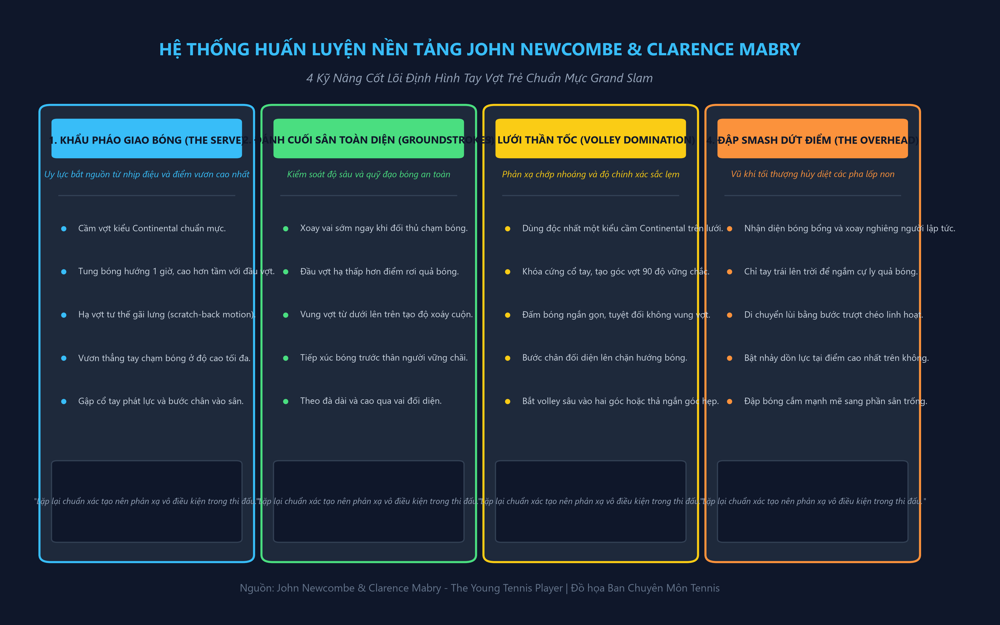
1. Cú Giao Bóng Khẩu Pháo (The Serve)
Cú giao bóng của tôi luôn được coi là một trong những vũ khí nguy hiểm nhất lịch sử quần vợt thế giới. Tuy nhiên, sức mạnh khủng khiếp ấy không xuất phát từ cơ bắp cuồn cuộn mà bắt nguồn từ một chuỗi chuyển động nhịp nhàng, liền mạch và đúng thời điểm.
Cầm Vợt Continental Bắt Buộc
Tuyệt đối không bao giờ được dùng kiểu cầm thuận tay để giao bóng. Bạn phải cầm vợt kiểu Continental (cầm búa). Cầm Continental cho phép cổ tay bạn tự do búng mạnh (wrist snap) vào quả bóng tại thời điểm tiếp xúc để gia tăng tốc độ đầu vợt tối đa.
Tung Bóng Hướng 1 Giờ
Hãy tung quả bóng lên cao hơn tầm với tối đa của bạn khoảng nửa gang tay và hơi chếch về phía góc 1 giờ (đối với người thuận tay phải), sâu vào trong sân khoảng 30 cm.
2. Cú Thuận Tay Cơ Bản (The Forehand Drive)
Cú thuận tay là cú đánh chủ lực giúp bạn chi phối các pha bóng cuối sân. Tại thời điểm đối thủ vừa chạm bóng bên kia lưới:
- Chuyển trọng tâm và xoay hông sớm: Bàn chân phải xoay ngang, trục hông và vai mở rộng sang một bên để kéo cây vợt ra phía sau một cách tự nhiên.
- Hạ đầu vợt xuống dưới bóng: Đầu vợt hạ thấp hơn tầm bóng nảy để chuẩn bị cho cú vung từ thấp lên cao (low-to-high swing path).
- Tiếp xúc bóng phía trước thân người: Mặt vợt gặp quả bóng ở vị trí ngang thắt lưng và chếch về phía trước hông trái khoảng một bước chân.
- Cú búng gia tốc và theo đà cao: Mặt vợt quét dài theo hướng bóng bay, sau đó vòng qua vai trái đối diện với khuỷu tay nâng cao ngang tầm mắt.
3. Cú Trái Tay Cổ Điển (The Backhand Drive)
Để đánh cú trái tay uy lực, tay không thuận (tay trái) đóng vai trò vô cùng quan trọng. Bạn dùng tay trái giữ nhẹ cổ vợt để giúp xoay bàn tay phải về kiểu cầm trái tay Eastern (xoay 1/4 vòng ngược chiều kim đồng hồ), đồng thời hỗ trợ kéo cây vợt ra phía sau một cách vững chắc.
Xoay vai phải sâu đến mức lưng bạn gần như quay một phần về phía lưới. Bước chân phải chéo qua trước thân người để khóa trục hông. Khi bóng tới, vung vợt mượt mà ra phía trước, tiếp xúc bóng ngay trước mũi bàn chân phải với cánh tay duỗi thẳng. Tay trái buông cổ vợt và vươn dài ra phía sau để giữ thăng bằng tuyệt đối cho cột sống.
4. Cú Bắt Volley Trên Lưới & Cú Đập Smash (Volleys & Smash)
Là một chuyên gia giao bóng lên lưới (Serve-and-Volley), tôi luôn coi mặt lưới là ngôi nhà của mình. Khi bạn đứng trên lưới:
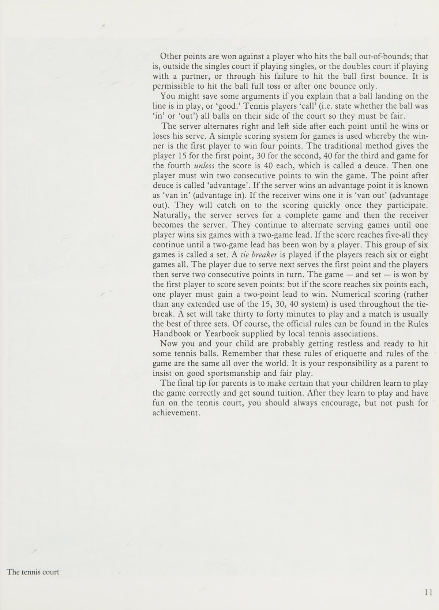
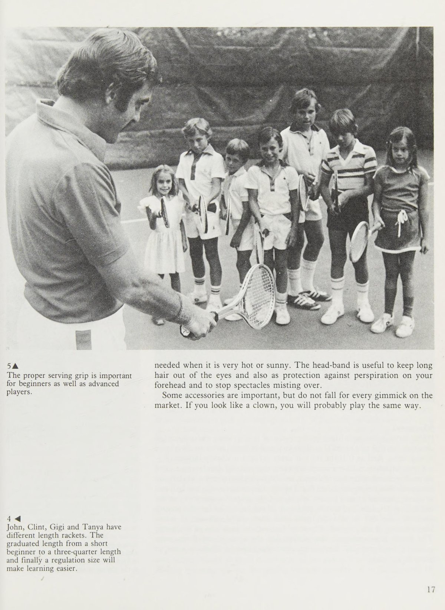
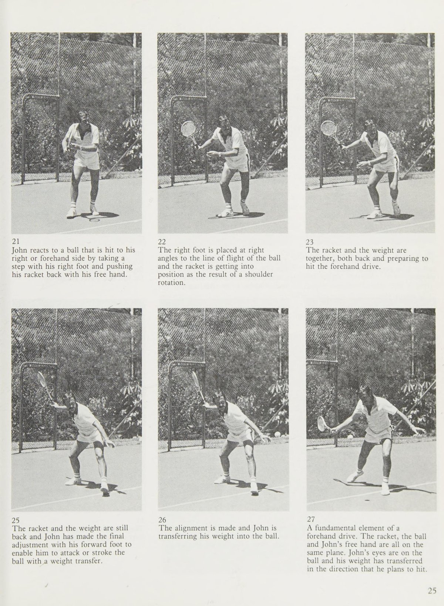
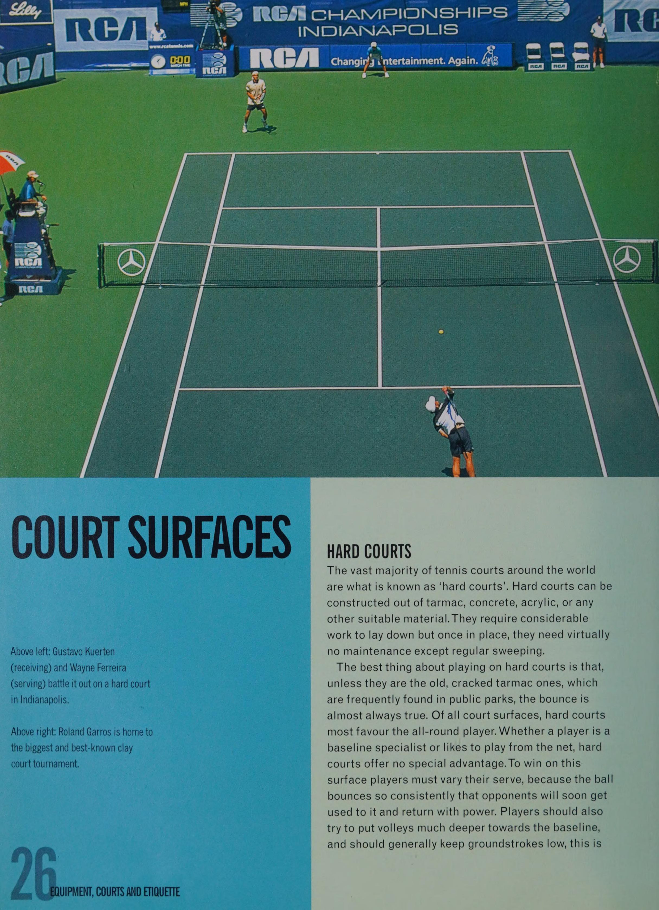
Nâng Tầm Lối Chơi: Làm Chủ Độ Xoáy Khí Động Học & Các Cú Đánh Cảm Giác Tinh Tế
Chương 2: Cơ Chế Tạo Độ Xoáy Khí Động Học (Understanding Spins)
Để hiểu được tại sao quả bóng nỉ lại hành xử kỳ lạ trên không trung và trên mặt sân, bạn cần nắm vững cơ chế vật lý cơ bản khi mặt vợt ma sát vào quả bóng. Có ba dạng tiếp xúc bóng căn bản chi phối toàn bộ các đường bóng trong môn quần vợt:
Xoáy Cuộn Lên (Topspin)
Mặt vợt vung từ dưới lên trên, quét mạnh qua phần sau và đỉnh của quả bóng. Quả bóng quay tròn về phía trước theo chiều bay.
Xoáy Cắt Lùi (Underspin / Slice)
Mặt vợt chém từ trên cao xuống dưới đáy của quả bóng. Quả bóng quay ngược chiều kim đồng hồ so với hướng bay.
Đánh Bóng Phẳng (Flat Shot)
Mặt vợt tiếp xúc thẳng góc 90 độ vào tâm quả bóng và đẩy mạnh về phía trước với độ xoáy ở mức tối thiểu.
Kỹ Thuật Cú Thuận Tay Topspin Nặng Của John Newcombe
Để thực hiện một cú thuận tay topspin uy lực, bạn cần chuyển đổi góc mở mặt vợt. Khi kéo vợt ra sau, hãy úp nhẹ mặt vợt xuống đất một góc khoảng 30 đến 45 độ. Khi bắt đầu vung vợt về phía quả bóng, đầu vợt phải hạ sâu xuống dưới quả bóng ít nhất 30 cm.
Cú đánh không đi thẳng qua bóng mà "chải" (brush) mạnh mẽ từ dưới lên trên qua mặt sau của quả bóng. Cổ tay hơi thả lỏng tự nhiên trong giai đoạn tăng tốc để đầu vợt phóng vút lên trước. Cú theo đà kết thúc cao qua vai trái, tạo nên một quỹ đạo bóng vồng cao hơn mép lưới từ 1 đến 2 mét nhưng vẫn cắm sâu vào vạch cuối sân đối phương.
Những Cú Đánh Tinh Tế Cảm Giác (Touch Shots)
Một tay vợt xuất sắc không bao giờ đánh bóng với cùng một tốc độ và sức mạnh từ đầu đến cuối trận đấu. Sự tinh tế nằm ở khả năng biến hóa nhịp điệu bằng những cú đánh cảm giác khiến đối thủ hoàn toàn bất ngờ.
Cú Bỏ Nhỏ Chiến Thuật (The Drop Shot)
Thời điểm lý tưởng nhất để thực hiện cú bỏ nhỏ là khi bạn nhận thấy đối thủ đã bị dồn ép lùi sâu ra sau đường biên cuối sân từ 2 đến 3 mét.
Cú Lốp Bóng Đa Mục Tiêu (The Lob)
Cú lốp bóng có hai công năng hoàn toàn khác biệt:
Cú Tiếp Cận Trái Tay (The Backhand Approach Shot)
Cú tiếp cận là chiếc cầu nối chuyển tiếp đưa bạn từ khu vực phòng thủ cuối sân tiến thẳng lên chiếm lĩnh mặt lưới. Khi đối phương trả về một quả bóng ngắn nảy lơ lửng ở khu vực giữa sân (vùng giao bóng), đây chính là cơ hội vàng để trừng phạt họ.
Hãy di chuyển nhanh nhẹn vào sân, xoay vai trái sâu và thực hiện một cú cắt bóng slice trái tay chìm sâu dọc theo đường biên (down the line). Đường bóng cắt trượt thấp sẽ ép đối phương phải đánh bóng ngửa lên từ dưới tầm đầu gối, tạo cơ hội cho bạn bắt cú volley kết liễu dễ dàng ở điểm tiếp theo.
Cú Demi-Volley / Bắt Bóng Nửa Nảy (The Half Volley)
Đây là cú đánh cứu nguy khó khăn bậc nhất khi quả bóng rơi ngay sát mũi chân của bạn trong lúc bạn đang di chuyển lên lưới. Bạn không thể bắt volley trên không, cũng không thể lùi lại để chờ bóng nảy lên cao.
Bí quyết để thực hiện cú half-volley hoàn hảo là: hạ thấp trọng tâm cơ thể bằng cách chùng sâu hai đầu gối, giữ cho mặt vợt mở nhẹ và gần như chạm sát mặt sân, đón quả bóng ngay trong khoảnh khắc nó vừa nảy lên khỏi mặt đất khoảng vài centimet với một chuyển động đẩy ngắn gọn và cổ tay khóa cứng.
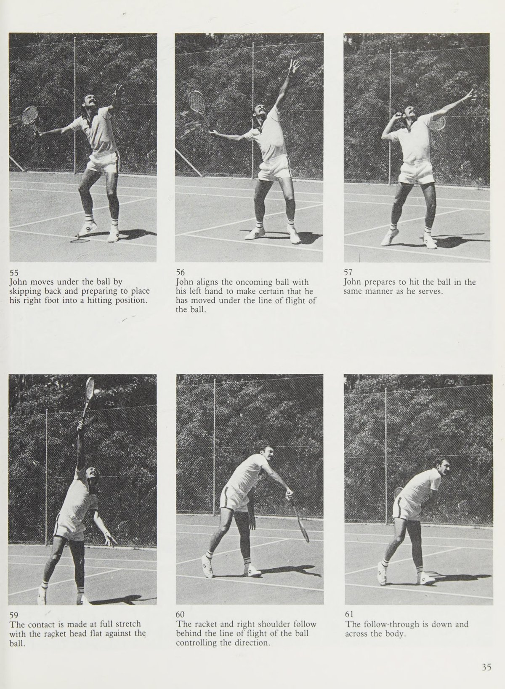
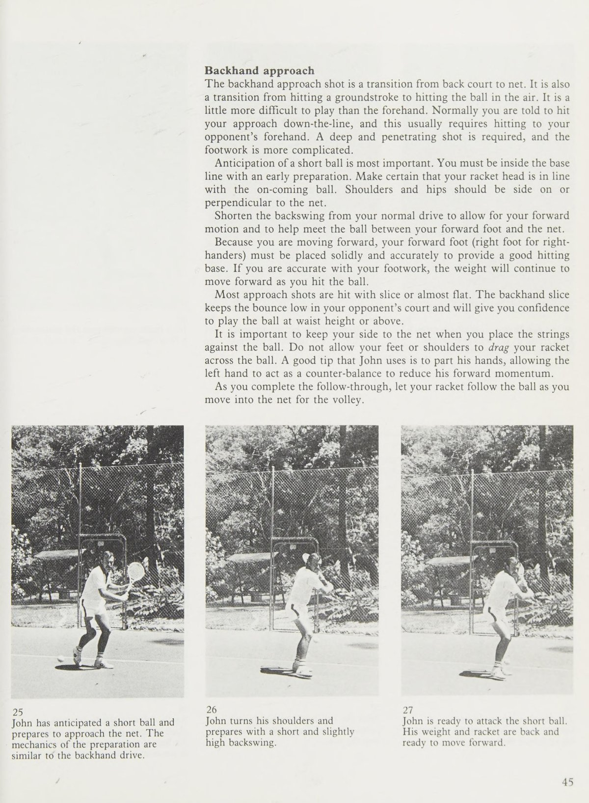
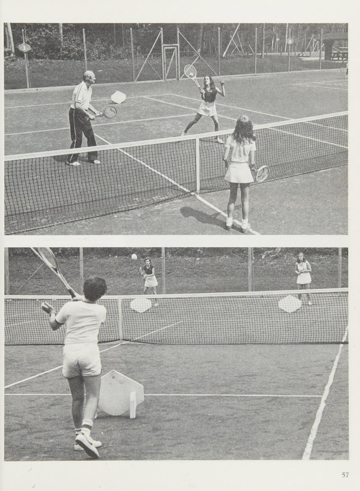
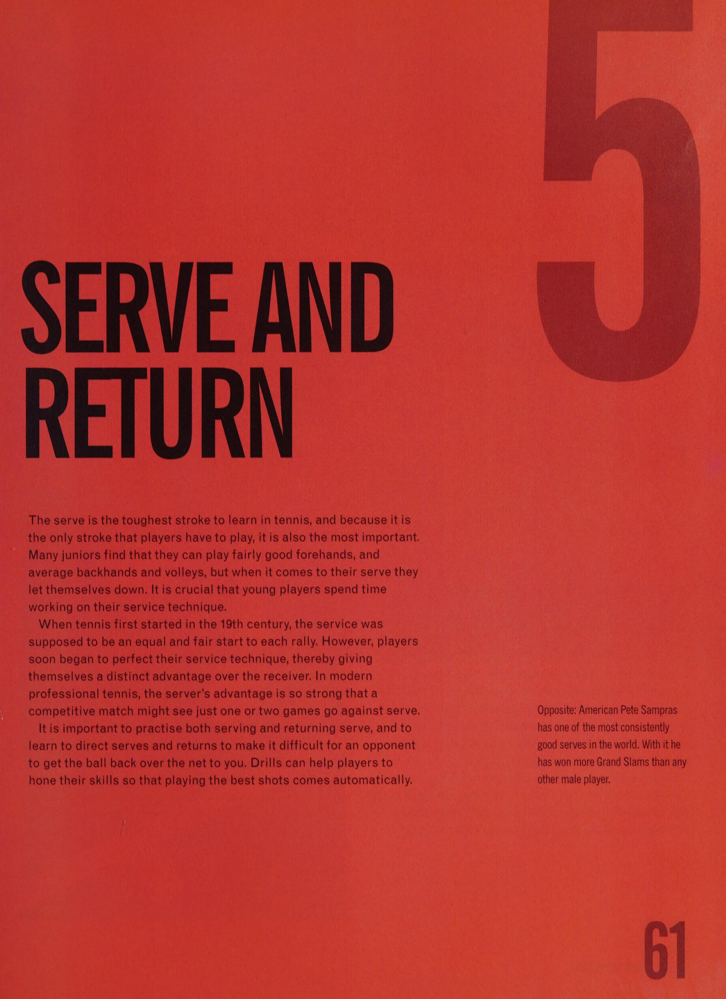
Hệ Thống Bài Tập Phát Triển Siêu Tốc & Bản Đồ Chiến Thuật Thi Đấu Đơn
Chương 3: Hệ Thống Bài Tập Phát Triển Siêu Tốc (Drills)
Để rút ngắn thời gian hoàn thiện kỹ thuật từ nhiều năm xuống còn vài tháng, bạn cần áp dụng các bài tập bổ trợ có chủ đích (deliberate practice) được thiết kế riêng cho lứa tuổi thanh thiếu niên:
Bài Tập Quần Vợt Thu Nhỏ (Mini-Tennis Rally)
Hai người chơi đứng ở hai vạch giao bóng đối diện (cách lưới khoảng 6 mét). Đánh bóng qua lại nhẹ nhàng với độ xoáy cuộn topspin êm ái.
Bài Tập Bắn Mục Tiêu Góc Sân (Target Practice)
Đặt hai chiếc hộp đựng bóng hoặc hai chiếc khăn tắm ở hai góc sâu cách đường biên cuối sân và đường biên dọc 1 mét.
Bài Tập Phản Xạ Lưới Bắn Nhanh (Rapid-Fire Volleys)
Hai tay vợt cùng đứng trên lưới cách nhau khoảng 4 mét. Một người bắt đầu bằng một quả volley nhẹ và hai bên liên tục bắt volley qua lại trên không với tốc độ tăng dần, tuyệt đối không để quả bóng chạm đất. Bài tập này tôi luyện phản xạ mắt, khóa cổ tay và khả năng chuyển đổi thần tốc giữa volley thuận tay và volley trái tay.
Chương 4: Nghệ Thuật Chiến Thuật Thi Đấu Đơn (Singles Match Play)
Một trận đấu đơn là cuộc đấu trí căng thẳng trên một không gian rộng lớn. Bạn không thể chỉ dựa vào sức mạnh cơ bắp để giành chiến thắng. Bạn cần có một chiến lược rõ ràng và làm chủ từng mét vuông trên mặt sân đấu.
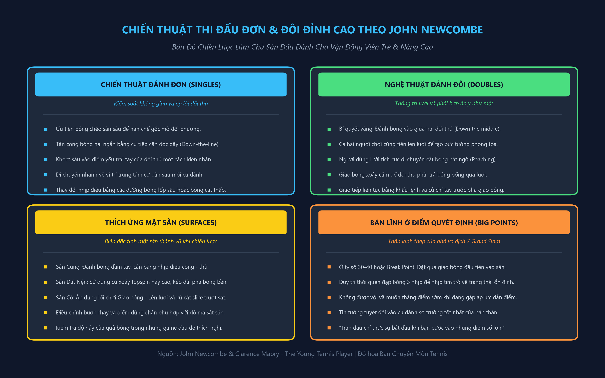
1. Vị Trí Sân Đấu Và Đường Phân Giác (Court Positioning)
Quy tắc hình học quan trọng nhất trong thi đấu đơn là: luôn đứng trên đường phân giác của góc đánh trả nguy hiểm nhất mà đối phương có thể tạo ra. Khi bạn đánh quả bóng sang góc sân bên phải của đối thủ, góc đánh trả của họ sẽ lệch về phía bên trái sân bạn. Do đó, vị trí phục hồi của bạn phải hơi lệch sang bên trái của vạch trung tâm khoảng một bước chân. Đứng sai vị trí sẽ khiến bạn luôn phải chạy trong tư thế bị động và mở toang sân đấu cho đối thủ ghi điểm.
2. Xây Dựng Điểm Số Từ Cuối Sân (Building the Point)
- Giai đoạn 1 — Thiết lập thế trận bằng bóng chéo sân sâu: Đánh những đường bóng chéo sân sâu an toàn vượt qua phần lưới võng thấp nhất để đẩy đối thủ lùi sâu ra sau vạch biên.
- Giai đoạn 2 — Nhận diện bóng ngắn và tiếp cận dọc dây: Khi đối phương bị ép phải trả về một quả bóng ngắn rơi trong khu vực ô giao bóng, lập tức bước vào sân và thực hiện cú tiếp cận dọc theo đường biên (down the line) với độ xoáy cuộn hoặc cắt trượt thấp.
- Giai đoạn 3 — Khóa lưới kết liễu: Tiến thẳng lên lưới theo đúng hướng đường bóng bay của bạn để khép góc passing shot của đối thủ và kết liễu pha bóng bằng một cú volley góc chéo sân trống.
3. Thích Nghi Các Mặt Sân Thi Đấu (Court Surfaces)
Một tay vợt toàn diện thực sự phải biết cách làm chủ các mặt sân thi đấu khác nhau:
Sân Cứng (Hard Court)
Độ nảy chuẩn xác và trung bình. Hãy duy trì sự cân bằng giữa nhịp điệu tấn công và phòng ngự bền bỉ, bước chân dứt khoát và đổi hướng nhanh.
Sân Đất Nện (Clay Court)
Bóng nảy chậm và vọt cao. Hãy rèn luyện kỹ năng trượt chân (sliding), kiên nhẫn trong những pha bóng bền trên 10 lần chạm và sử dụng độ xoáy topspin nặng để đẩy lùi đối thủ.
Sân Cỏ (Grass Court)
Bóng trượt nhanh và nảy rất thấp. Đây là thánh địa của lối chơi giao bóng lên lưới (Serve-and-Volley) và những cú cắt slice chìm sát chân đối thủ.
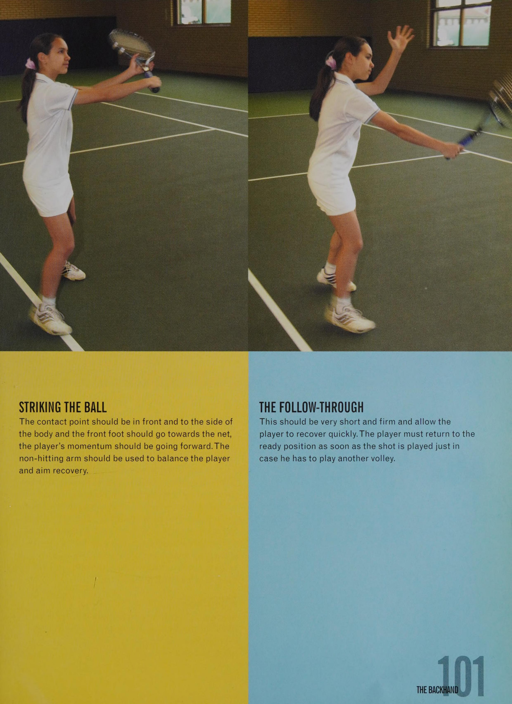
Nghệ Thuật Đánh Đôi Huyền Thoại, Rèn Luyện Thể Lực Toàn Diện & Tâm Lý Nhà Vô Địch
Chương 5: Nghệ Thuật Đánh Đôi Đỉnh Cao (Doubles Match Play)
Đánh đôi là thể thức thi đấu mang tính đồng đội cao, đòi hỏi sự phối hợp nhịp nhàng, tốc độ phản xạ trên lưới và khả năng đọc tình huống chớp nhoáng:
Quy Tắc Đánh Vào Giữa (Hit Up The Middle)
Đây là bí quyết chiến thuật quan trọng nhất trong môn đánh đôi mà mọi cặp đôi vô địch đều áp dụng triệt để.
Kỹ Thuật Bắt Lưới Cắt Bóng (The Poach)
Người đứng trên lưới không được đứng yên như một bức tượng gỗ. Bạn phải là một kẻ săn mồi đầy tính chủ động.
Tín Hiệu Bàn Tay Bí Mật Giấu Sau Lưng
Trước mỗi pha giao bóng, người đứng lưới sẽ đưa một bàn tay ra sau lưng để ra hiệu cho người giao bóng biết kế hoạch tác chiến:
- Nắm chặt bàn tay (Fist): Báo hiệu người đứng lưới sẽ ở yên vị trí bảo vệ hành lang dọc dây của mình.
- Mở xòe năm ngón tay (Open hand): Báo hiệu người đứng lưới sẽ lao sang cắt bóng (poach) ngay khi bóng được giao sang.
- Chỉ ngón tay sang trái hoặc phải: Chỉ định hướng mà người giao bóng nên nhắm tới (giao bóng vào góc chữ T hoặc giao bóng ép ra mang ngoài).
Chương 6: Thể Lực Toàn Diện, Dinh Dưỡng & Tâm Lý Nhà Vô Địch
Quần vợt hiện đại đòi hỏi một nền tảng thể lực phi thường. Nếu đôi chân của bạn bắt đầu run rẩy ở set đấu thứ ba, khối óc của bạn sẽ không còn đủ sự minh mẫn để đưa ra những quyết định chiến thuật chuẩn xác.
Bài Tập Chạy Biến Tốc 3 Dặm Của Newk
Một phương pháp rèn luyện thể lực khắc nghiệt nhưng mang lại hiệu quả vượt trội cho vận động viên trẻ:
Chế Độ Dinh Dưỡng & Bổ Sung Nước
Nhiên liệu bạn nạp vào cơ thể quyết định hiệu suất thi đấu của bạn trên sân đấu.
Bản Lĩnh Ở Những Điểm Số Quyết Định (The Big Points)
Một trận đấu quần vợt thường chỉ được định đoạt bởi ba hoặc bốn điểm số then chốt: một điểm cứu break point ở tỷ số 30-40, một điểm quyết định trong loạt tie-break, hoặc một cơ hội giành match point.